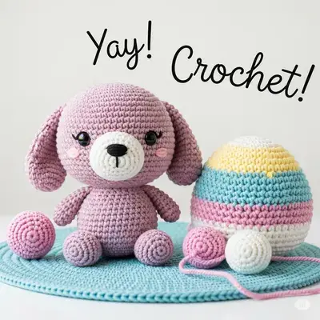

Home
About
Welcome to Crochet Me Knot Buzey, where we celebrate the art of crochet!
My name is Teniece Busenbark. I began crocheting by creating a simple chain at age 7.
In all honesty, I found crochet fascinating but boring. In my early 20s I discovered The Crochet Crowd, a social network for crafters, and it opened up a whole new world for me. The creator, Mikey, made learning new stitches and patterns fun. Now I love to create crocheted items for people.
My Projects
Here are some of my favorite projects that I have made
Click on the image to learn more about the project's story.Free Pattern Spotlight
Through Lionbrand

View Pattern